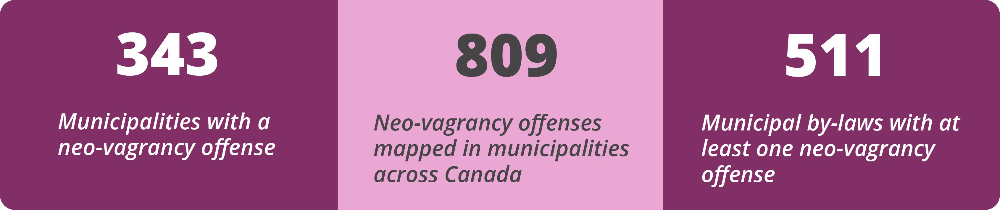

Anti-homeless laws pose a very real threat to people experiencing homelessness. One widespread form of anti-homeless legislation is what we have documented as neo-vagrancy law (learn more below). These anti-homeless laws punish people who are visibly poor and have no choice but to spend their time in public spaces. These anti-homeless laws include the following 7 offense types: panhandling, loitering, obstructing, salvaging, resting/sleeping, sheltering, and disorder. More info and descriptions of each offense can be found below.
77% of Canadians live in a jurisdiction with a Neo-Vagrancy Offence.
During the pandemic, enforcement of these laws continues to be a legal mechanism for displacing people experiencing homelessness from public spaces. Criminalisation of people who are homeless is in conflict with ensuring their health and safety and threatens their civil and human rights.
Our Data
The map and index on this page document neo-vagrancy offenses across Canada in municipalities with a population of over 5000. Use the map and index to look up neo-vagrancy offenses in your town.
Our mapping of neo-vagrancy laws in Canada is drawn primarily from the by-laws of municipalities. Current by-laws are posted on municipality websites for ‘research’ or ‘convenience’ purposes, with the limitation that they may contain errors or may not be up to date. Please contact us to report additions or corrections.
In addition, Ontario and British Columbia both have province-wide Safe Streets Act legislation that targets panhandling. Both of these provincial laws are included/counted as one point on the map, under the offence type of ‘panhandling’.
Neo-Vagrancy Offense Types
We have adhered to the following criteria in developing each neo-vagrancy offence type.
Panhandling ('soliciting')
The map includes anti-panhandling and anti-begging laws. These laws prohibit soliciting money or something of value from pedestrians. Some of the laws completely prohibit panhandling, while others partially restrict it during certain times (e.g. after 5pm), in certain places (e.g. in a park), or along with certain behaviours (e.g. while sitting). Regardless of how narrowly they are written, we consider all panhandling by-laws to be discriminatory for two reasons: 1) they directly target an activity associated with homelessness and poverty, 2) pedestrians often give money to people perceived as being visibly needy in public space, even if that person is not actively soliciting donations.
Also, while they are sometimes used against homeless people, we do not include laws whose purpose is to regulate activities that have a commercial aspect such as touting, trading, hawking, vending, peddling or busking. As well, we do not include soliciting carried out on a roadway, or a permitted or registered charity.
Loitering
All by-laws that explicitly prohibit loitering are included in the map. The prohibition on loitering is sometimes specifically against ‘lingering’ or standing around somewhere ‘without an apparent purpose’; in other cases, loitering is restricted to certain times and places (i.e. after sunset, inside parks). We have included all loitering prohibitions not just because they are very subjective, but also because any homeless person surviving in public space would automatically be a target of the law.
Obstructing
Obstructing by-laws are a close cousin of loitering by-laws. They are very generally defined as bothering a pedestrian’s right to passage. While they are more specific than loitering by-laws, sometimes these laws are written in a way that is so vague and subjective that they could target homeless people who live in and survive in public space. We included these by-laws on the map. Obstructing offences can also be used to indirectly target people who are homeless by claiming that their personal possessions (such as a sleeping bag) pose a hazard to the public.
Salvaging ('scavenging')
Salvaging by-laws prohibit homeless people from ‘picking-over’ and collecting from recycling and refuse containers for personal use – to find edible food or to collect bottles and cans that have recycling value. We do not include by-laws that prohibit scavenging as an organized commercial activity, or those that interfere with waste disposal sites.
Resting and Sleeping
This category overlaps with both loitering and obstructing by-laws, but these laws are distinct because they specifically target the bodies of homeless people that are resting (sitting, reclining or sleeping) in public spaces. These by-laws can be general anti-sleeping prohibitions in all public spaces or can restrict sitting and sleeping in specific places (on street furniture or grassy areas). Along with loitering and obstruction by-laws, they can work to exclude the very simple presence of homeless people altogether from public spaces.
Sheltering
By-laws regulating camping or erecting materials like tents, tarps or other covers in public space are categorized as sheltering by-laws. They emphasize some sort of shelter or place-making. Some of these by-laws allow narrow exceptions for homeless people, but still restrict times and places where people can set up shelters, effectively banning building shelter for more than a very short period of time (usually from sunset to sunrise).
We do not include by-laws that regulate recreational camping in municipal parks that have organized campgrounds with permitted sites. Nor do we include general prohibitions involving entry into park spaces.
Disorder
These by-laws prohibit vaguely-defined behaviours that provide a means to target anyone that a member of the public may find to be undesirable. Often these by-laws characterize certain kinds of conduct as a form of ‘nuisance’, using extremely general language about ‘annoying’, ‘offending’ or ‘being objectionable to’ others. They are so general and vague that they provide a legal means to anyone to complain about street-involved people in public spaces.
We do not include general anti-nuisance by-laws that specifically prohibit harassment or violent behaviour in public spaces.
About Neo-Vagrancy Laws
Vagrancy prohibitions have a 700 year-old history in English criminal law. Vagrancy offences were designed to target anyone whose simple presence was perceived as a threat to the prevailing social and economic order. In particular, people who were visibly poor and could not give a ‘good account’ of themselves were arrested as criminals.
Vagrancy law has been complicit with some of the most violent expressions of racism. Racial profiling and ‘stop and search’ practices were a central feature of vagrancy law enforcement. Black and Asian Canadians, Indigenous Peoples, queer and trans individuals, and sex workers - all were major targets of vagrancy law before most of the offences were repealed from Canada’s Criminal Code by the early 1970’s.
In the last 30 years, there has been a revival of vagrancy type laws directed at people who are homeless and street involved. New or revised laws have been enacted across Canada targeting the presence and survival activities of homeless people in public spaces.
We call these laws neo-vagrancy laws because they revive a key purpose of archaic vagrancy law: to punish people who are visibly poor and have no choice but to spend their time in public spaces.
These laws are profoundly prejudicial given how minority communities (such as Indigenous Peoples) are over-represented in homeless populations.
We conclude on an important point: neo-vagrancy laws are a specific set of anti-homeless laws that reproduce aspects of repealed vagrancy law. They do not include a wide range of other laws that are often used against people experiencing homelessness such as alcohol or trespass laws. Indeed, as we will explore in upcoming research, they are only one feature of a legal landscape that punishes people who are homeless and attempts to drive them out of public spaces.
August 25, 2021
This work is protected under a Creative Commons license that allows you to share, copy, distribute, and transmit the work for non-commercial purposes, provided you attribute it to the original source.
This essay may be cited as:
Hermer, J., & Fonarev, E. (2021, August 25). Neo-Vagrancy Laws in Canada. Retrieved from: http://covid19-phi.ca/
Bibliography
Bellot, C., & Sylvestre, M. (2017). La judiciarisation de l’itinérance à Montréal : les dérives sécuritaires de la gestion pénale de la pauvreté. Revue générale de droit, 47: 11–44.
Bellot, C., Raffestin, I., Royer, M., & Noël, V. (2005). Judiciarisation et criminalisation des populations itinérantes à Montréal. Rapport de recherche préparé pour le Secrétariat National des Sans– abri, octobre 2005, p. 27–28.
Bernier, D., Bellot, C., Sylvestre, M., & Chesnay, C. (2011). La judiciarisation des personnes en situation d’itinérance à Québec : point de vue des acteurs socio-judiciaires et analyse du phénomène. Revue générale de droit, 47: 11-44.
Blackmon, D. (2009). Slavery by Another Name: The Re-Enslavement of black Americans from the Civil War to World War II. New York: Anchor Books.
Bouclin, S. (2015). Identifying Pathways to and Experiences of Street Involvement through Case Law. Dalhousie Law Journal, 38(2): 345-383.
Boivin, R., & Billette, I. (2012). Police et itinérance à Montréal : analyse des constats d’infraction aux règlements municipaux, 2005-2009. Crime et jeux de hasard, 45(2): 249-276.
Canadian Civil Liberties Association, Policing the Pandemic Mapping Project. Stay off the Grass: COVID-19 and Law Enforcement in Canada, June 2020. https://ccla.org/cclanewsite/wp-content/uploads/2020/06/2020-06-24-Stay-Off-the-Grass-COVID19-and-Law-Enforcement-in-Canada1.pdf
Campbell, M., & Eid, P. (2009). La judiciarisation des personnes itinérantes à Montréal : un profilage social. Commission des droits de la personne et des droits de la jeunesse, cat. 2.120-8.61.
Chesnay, C., Bellot, C., & Sylvestre, M. (2013). Taming Disorderly People One Ticket at a Time: The Penalization of Homelessness in Ontario and British Columbia. Canadian Journal of Criminology and Criminal Justice, 55(22): 161-185.
Collins, D., & Blomley, N. (2003). Private Needs and Public Space: Politics, Poverty, and Anti- Panhandling By-Laws in Canadian Cities. In Law Commission of Canada, (Eds.), New Perspectives on the Public-Private Divide (pp. 40-67). Vancouver, BC: UBC Press.
European Federation of National Organisations Working with the Homeless. (2020, Spring). The Criminalisation of Homelessness. Homeless in Europe. Retrieved from: https://www.feantsa.org/public/user/Resources/magazine/2020/Homeless_in_Europe_Magazine_Spring2020_Criminalisation_of_homelessness.pdf
Fortin, V. (2018). Le contrôle des espaces publics à Montréal, à l’ère de la justice managériale. Penal Field, 15: https://doi.org/10.4000/champpenal.10115
Gaetz, S., O’Grady, B., Buccieri, K., Karabanow, J., & Marsolais, A. (2013). Governing the Streets: The Legal, Social, and Moral Regulation of Homeless Youth. In Homeless Hub (Eds.), Youth Homelessness in Canada: Implications for Policy and Practice. Toronto, ON: Canadian Homelessness Research Network Press.
Gaetz, S., O’Grady, B., Buccieri, K., Karabanow, J., & Marsolais, A. (2013). Policing Street Youth in Toronto. In Homeless Hub (Eds.), Youth Homelessness in Canada: Implications for Policy and Practice. Toronto, ON: Canadian Homelessness Research Network Press.
Hall, S., Critcher, C., Jefferson, T., Clarke, J., & Roberts, B. (1978). Policing the crisis: mugging, the state, and law and order. London, England: Macmillan Press.
Hermer, J. (2019). Policing Compassion: Begging, law and power in public space. Oxford: Hart Publishing.
Hermer, J. (2020, February 2). Thomas Parker and the tragedy of Vagrancy Law. Retrieved from: https://www.crisis.org.uk/about-us/the-crisis-blog/thomas-parker-and-the-tragedy-of-vagrancy-law/
Hermer, J., & Mosher, J. (2002). Disorderly People: Law and the politics of exclusion in Ontario. Halifax: Fernwood Publishing.
Johnsen, S., Fitpatrick, S., & Watts, B. (2018). Homelessness and social control: a typology. Housing Studies, 33(7): 1106-1126.
McClelland, A., Luscombe, A. (2020). "Policing the Pandemic: Tracking the Policing of COVID-19 Across Canada", https://doi.org/10.5683/SP2/KNJLWS, Scholars Portal Dataverse.
Morris, N. (2019). Scrap the Act: The case for repealing the Vagrancy Act (1824). London: Crisis.
O’Grady, B., Gaetz, S., & Buccieri, K. (2011). Can I see your I.D.? The policing of youth homelessness in Toronto. Retrieved from: https://www.homelesshub.ca/CanISeeYourID
Ranasinghe, P. (2012). Vagrancy as a penal problem: the logistics of administering punishment in late-nineteenth-century Canada. Journal of Historical Sociology, 25(4): 531-551.
Ranasinghe, P. (2015). Refashioning vagrancy: a tale of law’s narrative of its imagination. International Journal of Law in Context, 2(3): 320-340.
Statistics Canada. (2016). Population and dwelling count highlight tables, 2016 census: population and dwelling counts, for Canada, provinces and territories, and census subdivisions (municipalities), 2016 and 2011 censuses. Retrieved June 25, 2020 from: https://www12.statcan.gc.ca/census-recensement/2016/dp-pd/hlt-fst/pd-pl/List-prov-terr.cfm?Lang=Eng&T=302&S=86&O=A
Sylvestre, M., & Bellot, C. (2014). Challenging discriminatory and punitive responses to homelessness in Canada. Advancing Social Rights in Canada, Irwin Law. Retrieved from: https://papers.ssrn.com/sol3/papers.cfm?abstract_id=2484975
Sylvestre, M., Bellot, C., Ménard, P., & Tremblay, A. (2013). Le droit est aussi une question de visibilité : 2 occupation des espaces publics et parcours judiciaires des personnes itinérantes à Montréal et à Ottawa. Cambridge University Press, 26(3): 531-561.
The National Law Center on Homelessness & Poverty and The National Coalition for the Homeless. (2009). Homes not handcuffs: The criminalization of homelessness in U.S. cities. Retrieved from: https://nationalhomeless.org/wpcontent/uploads/2013/11/CrimzReport_2009.pdf
The National Law Center on Homelessness & Poverty and The National Coalition for the Homeless. (2006). A dream denied: The criminalization of homelessness in U.S. cities. Retrieved from: https://nationalhomeless.org/wp-content/uploads/2014/06/CrimzReport2006.pdf
Quirouette, M. (2016). Conflict with the Law: Regulation & Homeless Youth Trajectories toward Stability. Canadian Journal of Law and Society, 31(03): 383-404.
Waldron, J. (1991). Homelessness and the Issue of Freedom. UCLA Law Review, 39(1): 295- 324.